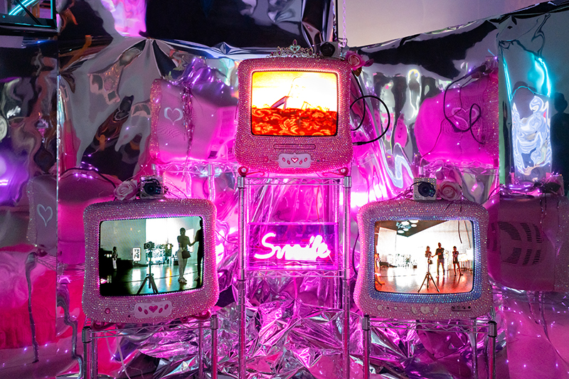

Chroma Art Film Festival x Superblue
CRT TVs, Surveillance Cameras, Bedazzled Frames, Mylar
Miami, Florida, 2024
"Surveillance Cutie" transforms the act of surveillance into a playful yet unsettling experience. The installation features pink bedazzled CRT TVs and security cameras wrapped in sparkling aesthetics, surrounded by reflective mylar creating an immersive dreamy space.
The piece explores how hyper-feminine aesthetics and nostalgic technology can camouflage the unease of constant observation. By turning surveillance equipment into dazzling objects of attraction, "Surveillance Cutie" invites viewers to question how visual sweetness can mask structures of control.
Viewers find themselves reflected and recorded within an environment that appears innocent and cute — yet speaks to broader tensions between vulnerability, privacy, and performativity in an age dominated by digital and visual cultures.